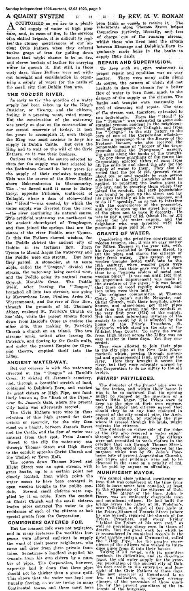
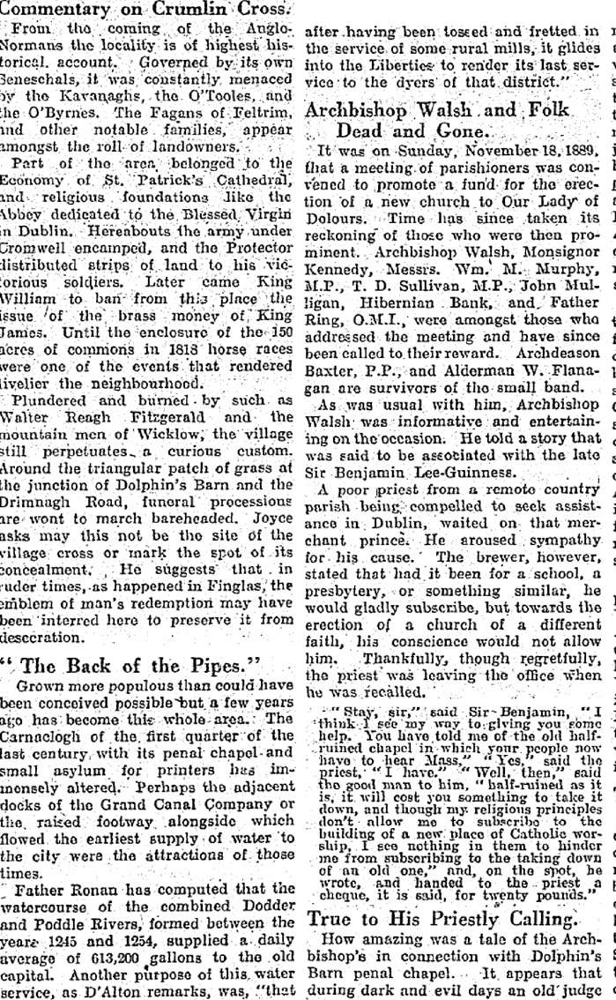
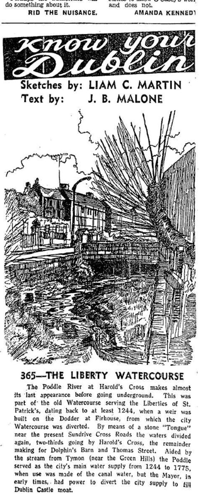
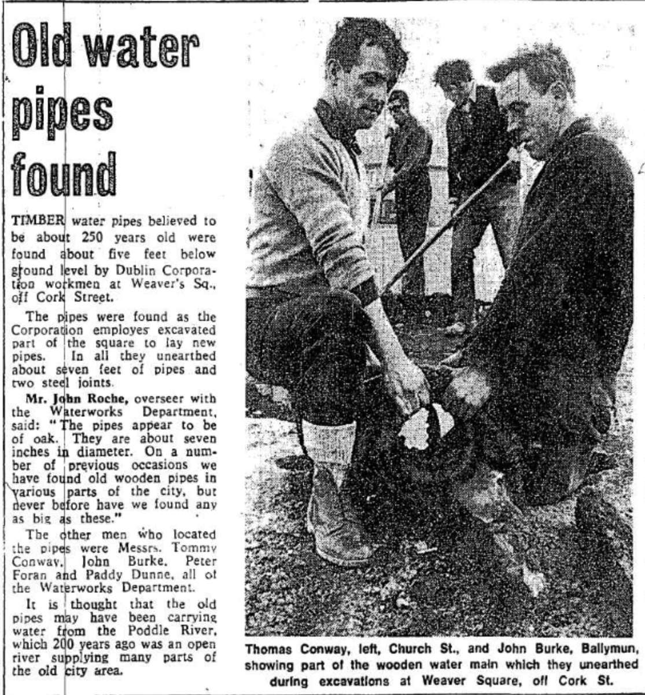
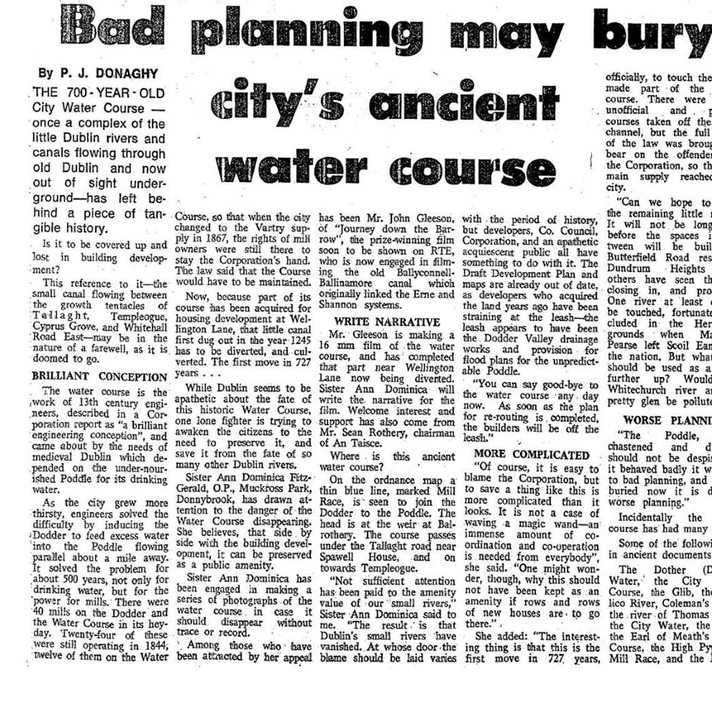
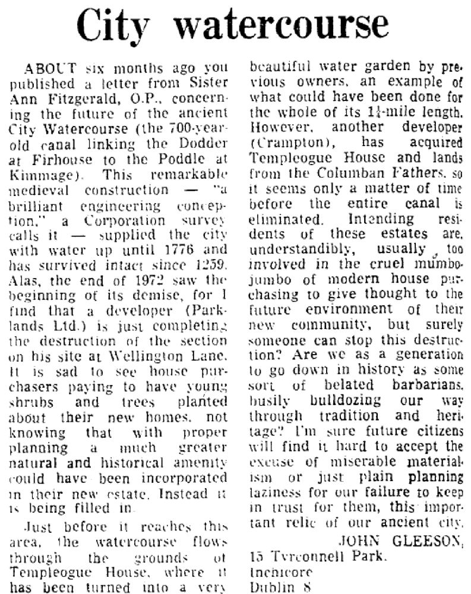
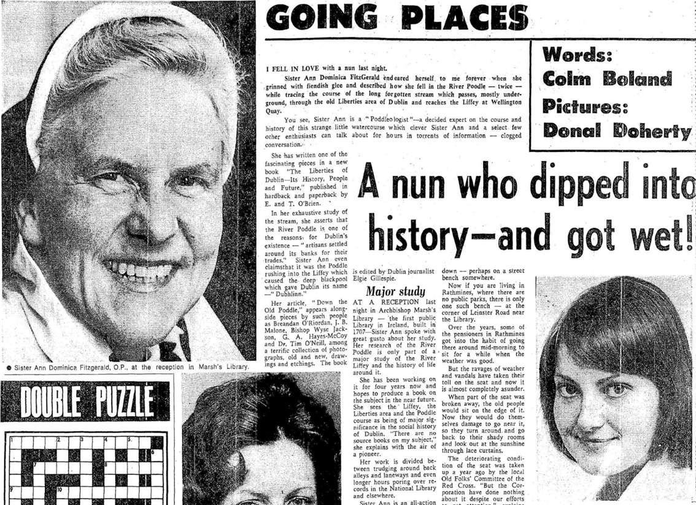
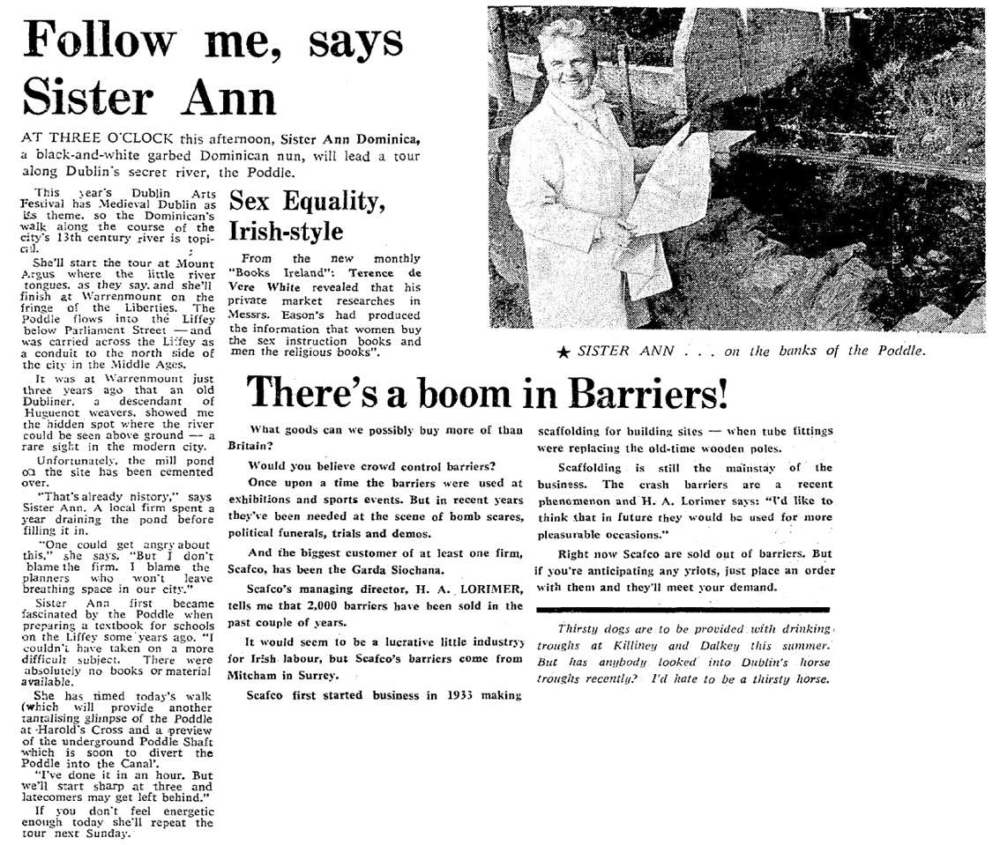

History · 1245 to 1324
The City Watercourse and the Abbey Stream
Two channels made for the monks and the city, and how to find them on the map.
The City Watercourse
The City Watercourse is an artificial channel. At the Stone Boat, in Harold’s Cross, it took one third of the river’s water: two thirds stayed in the Poddle and one third went into the watercourse, which carried it north-west towards Dolphin’s Barn. Near today’s Basin Lane it turned east along the south side of James’s Street and through Thomas Street into the city.
It was the city’s main water supply for centuries, which is why the 1719 Act of Parliament was written to keep it clean and to stop mill owners starving it of water. A branch of it, the Tenter Water, rejoined the Poddle at Fumbally Lane. The Poddle’s one real tributary, the Commons Water, came in from Crumlin along the Cork Street area and joined it near the Coombe; both are drawn, approximately, on the map.
On the map page the City Watercourse is shown as a dashed red line, from Balrothery Weir to the Stone Boat and on to Christ Church. As far as Dolphin’s Barn it follows a line drawn from old Ordnance Survey maps; the stretches above Mount Down and beyond Dolphin’s Barn are drawn from a local hand-drawn map with no stated source. Treat all of it as approximate.
Water for the city
The scheme began with an inquiry. In April 1244 the justiciar, Maurice FitzGerald, ordered a search for a new water supply for Dublin, and the city came to an arrangement with St Thomas’s Abbey to take water from the Dodder at Balrothery. The work went on, by most accounts, from 1245 to 1324.
From the basin near James’s Street the water ran along Thomas Street and High Street to a conduit at Christ Church and the Tholsel. Householders could tap it, but private lead pipes were supposed to be no thicker than a goose quill. In 1308 the mayor, John le Decer, paid for a marble cistern at Cornmarket, and iron mains began to replace the old pipes from 1802. In November 1970 the Evening Herald reported timber water pipes, perhaps 250 years old, dug up at Weaver’s Square.
The Poddleologist
In the early 1970s the City Watercourse between Firhouse and Kimmage was threatened by new building. A Dominican nun, Sister Ann Dominica Fitzgerald, walked its length, fell into the Poddle twice while tracing it, and called herself a “Poddleologist”. She wrote to the papers in 1972 and 1973 to save the 700-year-old channel, and in 1976 led a Poddle tour for the Dublin Arts Festival, from Mount Argus to Warrenmount.
Born in Blackrock, she taught at the Dominican convent at Muckross Park in Donnybrook and took her classes out on the river whenever she could. She photographed stretches of the watercourse before they disappeared, wrote the narration for a 16mm film of it made by John Gleeson of Inchicore, who also wrote to the papers to defend it, and contributed “Down the Old Poddle” to The Liberties of Dublin, edited by Elgy Gillespie (E. and T. O’Brien, 1973). Her interest began while she was writing a schools book on the Liffey and found there were no books on the subject. In a letter to the Irish Press on 1 May 1972 she wrote that she had gone back to re-photograph Mount Down Mill and found it razed. She died on 10 March 2006.
The Abbey Stream
The Abbey Stream is the name given on modern maps to a channel that leaves the Poddle near the Hospice and Greenmount, at Harold’s Cross, and runs north-west towards St Thomas’s Abbey. Rev. Myles Ronan’s 1927 map marks a “course of ancient water” heading the same way, across the fields east of the river. Between 1245 and 1324 the monks redirected the river’s course to serve their mills, and this is the kind of channel that diversion would have made.
At Mount Jerome the Poddle itself makes an almost right-angled turn, and Ronan asked whether that too was a diversion made for the abbey. On the map page the Abbey Stream is the amber band; its middle section is under streets, so the link across it is a straight, approximate line.
What the old records say
Older writers describe the two branches at the Tongue in detail. The branch that became the Poddle’s city course ran by Greenmount, under the canal, then by Blackpitts, New Row and Patrick Street to the castle and the Liffey. The City Watercourse proper ran to Dolphin’s Barn and along an embankment called the Pipes to the city basin near James’s Street. A cistern was built near the old reservoir around 1670. The planning file page has the full record.
Two channels, one river
The two are easy to confuse. The City Watercourse leaves the river at the Stone Boat, upstream. The Abbey Stream leaves it further down, at Harold’s Cross, and both were made to serve the abbey and the city.
See the Mount Jerome turn on the river walk →
Watch and read
From the planning file
Facts from the flood scheme’s planning application and four local planning files.









